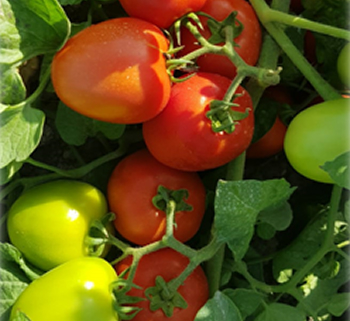
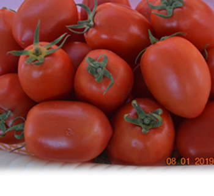

Agridera Fresh Market Tomato Hybrids
Agridera aims to be one of the world's leading companies in the breeding, production, and marketing of tomato seeds. We invest intensively in research and development to provide solutions to growers and consumers in numerous countries around the world. In particular, we breed improved disease-resistant cultivars adapted to different markets globally.
Currently, emphasis is placed on combining Tomato Yellow Leaf Curl Virus (TYLCV) and Tomato Spotted Wilt Virus (TSWV) resistances with other soil borne diseases into superior tomato breeding lines and hybrids. Moreover, comprehensive efforts are being undertaken to develop varieties resistance to TBRFV virus (Tomato Brown Rugose Fruit Virus).
In terms of horticultural traits, breeding is for earliness, different fruit sizes, firmness, red fruit color, flavor, crack resistance, shelf life, and high/low temperature fruit set. Combinations of quality features and disease resistance are sought in a variety of types, namely round and elongated shapes.
Greenhouse Tomato Breeding Program
This breeding is aimed for the Spanish and Turkish markets. For single and cluster picks, round fruit shape and resistances of TYLCV, TSWV, Nematodes and FORL (Fusarium oxysporum f.sp. radicis-lycopersici). Some hybrids may include more resistances, such as Cladosporium and Leveillula Taurica (Lv).
Open-field Indeterminate Tomatoes
This breeding is for Brazilian, Moroccan, and Turkish markets. The main focus is on large round shape fruits (200 grams plus), and resistances of TYLCV, TSWV, Nematodes and FORL. In the near future, F3 (Fusarium oxysporum f.sp. lycopersici) will be included as basic resistance in our cultivars.
Open-field Bush Type Tomatoes
This breeding is for Mediterranean markets. We breed round and elongated shapes, standard sizes (140 - 180 grams), and beef sizes (min. 180 grams up to 300 grams and more). We combine the resistances of TYLCV, TSWV and Nematodes as basic resistances in our hybrids. However, some hybrids may include more resistances, such as Cladosporium and Leveillula Taurica (Lv).

TAG 1000 (TAG 853)
Tomato Determinate Red Standard Round

TAG 1001 (TAG 855)
Tomato Determinate Red Standard Round

TAG 1002 (TAG 809)
Tomato Determinate Red Standard Round

TAG 1003 (TAG 834)
Tomato Determinate Red Standard Round

TAG 1004 (TAG 848)
Tomato Determinate Red BEEF Round

TAG 1005 (TAG 800)
Tomato Determinate Red Standard Round

TAG 1006 (TAG 898)
Tomato Determinate Red Elongated

TAG 1007 (TAG 816)
Tomato Determinate Red Elongated